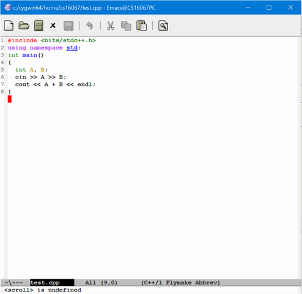
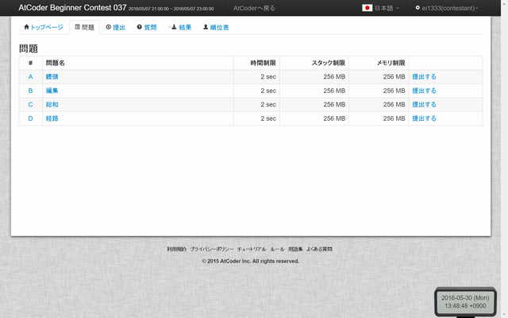
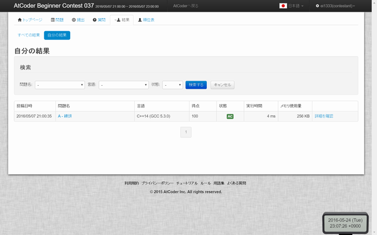
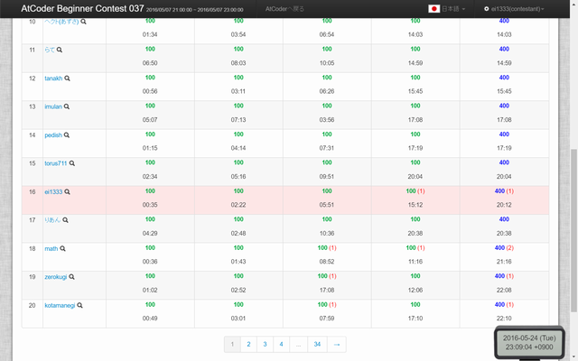
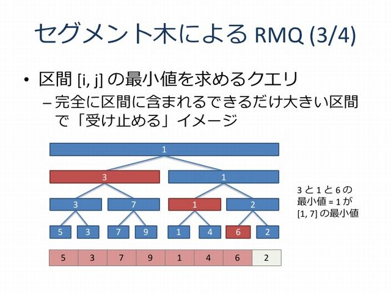
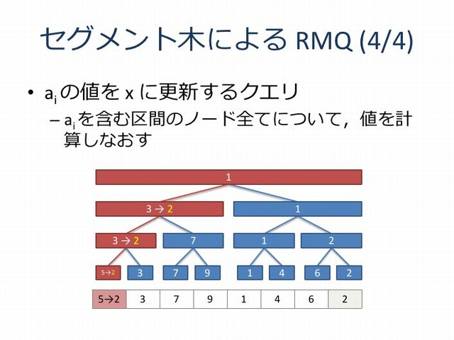

競技プログラミングについて
このページでは私の趣味の 1 つである競技プログラミングのルールや魅力について説明していきます.
競技プログラミング
競技プログラミングとは
競技プログラミングとは、「費用を最小化せよ」「価値を最大化せよ」といった問題が与えられ、
その問題を解くため手順(アルゴリズム)を考えて、それをプログラムによって実装する力を競う競技です.
問題には様々な難易度があり難しい問題となれば、より効率的なアルゴリズムを考えることが求められてきます.
競技プログラミングの魅力
楽しい
アルゴリズム(問題の解法)を考えることが楽しいというのが、一般的に競技プログラマーが感じていることだと思います. アルゴリズム設計に必要なものとして, 基本的なアルゴリズムの知識(queueなどのデータ構造, グラフ, 幾何学など)を, 設計技法(動的計画法, 貪欲法, 二分探索) と組み合わせる能力, 今までの経験や自分の発想力・思考力を用いることが必要となってきます.
アルゴリズムの設計がなぜ楽しいのはやってみればわかります(個人差があるみたいです.
実装力の向上
プログラミング言語を用いるので, やっているとそのうちその言語に慣れてきて, 短時間で実装できるようになります. また, 実装の回数を重ねるうちにバグに気付きやすくなったり, プログラムにバグを埋め込まなくなってきます(たぶん.
英語力や数学力の向上
問題文は英語の場合が多いので, 問題を解くには英語を読む必要があります.
また, 行列演算や方程式, 空間幾何の問題は数学的な知識が必須です.
知らなくて解けないと悲しくなるので, ちょっとずつ覚えて知識を磨くことができます.
世界中の人々とリアルタイム対戦
時間に制限がある中でプログラムを書くというゲーム的なものがあります. リアルタイムにソースコードが採点されて, 順位が逐次更新されます. 日本中, あるいは世界中の人々とオンラインで競い合うことができます.
SNS で情報共有
Twitter には競技プログラマーの上級者から初心者まで多くの人が群がっています. 特にコンテスト終了後に盛んです. その時間帯に何かつぶやくことで, その人たちと知り合って仲良くなることができます(たぶん. 技術の向上には競い合える仲間の存在が不可欠な気がします.
プログラミングコンテスト
例年, ある年代 または全世代を対象とした競技プログラミングコンテストが毎年定期的に開催されています.
主なプログラミングコンテスト一覧
情報オリンピック(JOI)
高校生以下の年代のためのコンテスト. 個人戦. 日本代表は 4 人.
また選考合宿参加者にはアジア太平洋情報オリンピック(APIO)の参加権も与えられる.
| 段階 |
予選 |
本選 |
日本代表選考合宿 |
国際大会 |
| 参加者数 |
約1000名 |
80名 |
20名 |
約300名 |
ACM-ICPC 国際大学対抗プログラミングコンテスト(ICPC)
大学生を対象としたコンテスト. 3人のチーム戦. 大学別にチームを組む.
| 段階 |
国内予選 |
アジア地区予選 |
国際大会 |
| 参加チーム数 |
約300チーム |
約40チーム |
約125チーム |
Google Code Jam (GCJ)
18歳以上を対象とした Google が開催しているコンテスト. Round 3 まではオンラインで実施されていて, Round 2 で上位 1000 人には T シャツが配布される.
| 段階 |
Qualification |
Round 1 |
Round 2 |
Round 3 |
World Finals |
| 参加者数 |
約27000人 |
約22000人 |
3000人 |
500人 |
25人 |
Facebook Hacker Cup (FHC)
18歳以上を対象とした Facebook が開催しているコンテスト. Round 3 まではオンラインで実施されていて, Round 2 で上位 500 人には T シャツが配布される.
| 段階 |
Qualification |
Round 1 |
Round 2 |
Round 3 |
World Finals |
| 参加者数 |
約6500人 |
約3500人 |
約1700人 |
200人 |
25人 |
オンラインプログラミングコンテストの参加
プログラミングコンテストはオンラインでも開催されていて誰でも簡単に参加できます.
オンラインのコンテスト一覧
主なオンラインコンテスト一覧です. 日本語の問題で出されることは少なくて英語が多いです.
レーティングシステム
CodeforcesやTopCoderはレーティングシステムという面白いものがあって, コンテスト結果によってレートが逐次変動します.
レートの値によって色付けされていて, 一番上の位の人々は赤色であることから通称 RedCoder と呼ばれています(上位0.1%, 日本で30人程度).
(余談: 面白いのだけど欧米の時間帯に合わせて開催されるので, 日本時間で見るとかなりつらい時間になるので翌朝の寝不足は避けられない...)
準備するもの
ここでは AtCoder が定期的に開催している ABC(AtCoder Biginer Contest) を例にとります. 他のコンテストでも概ね同じです.
ABC は初級者・中級者向けのコンテストで問題は日本語で出されます.
-
パソコン(要: ネット環境)
一般的にはパソコンが必要です. コンテストはオンラインで開かれるので, インターネットに接続できる環境が必要です.
-
自由な時間
コンテストの開催時間はコンテストの種類によっていろいろです. ABC は隔週土曜日の 21:00-23:00 で開催されます.
-
プログラミング言語の知識
多くの場合プログラムのソースコードの提出が求められるので, 解答はプログラミング言語で記述する必要があります. 標準入出力や条件分岐,繰り返しなど基本的な構文が書ければ満足な場合が多いです.
一般に, 実行速度が早い, ライブラリが充実しているなどの観点から C++ 言語を用いる場合が多いですが, C, Java, C#, Python などの言語を使用することも可能です.
-
プログラミング環境
プログラミングするために最低限パソコンに入れておきたいものを以下に挙げます.
-
テキストエディタ
ソースコードを記述するためのエディタが必要です. 有名なものに emacs, vi などがあります. 以下は例として emacs を挙げています.

-
コンパイラ
ソースコードをコンパイルする(プログラムにする)ためのコンパイラが必要です.
-
(軽食)
頭をつかうのでのどが渇いたりお腹がすいたりするかもしれません. スポーツドリンクなどの飲み物や甘い食べ物などを用意しておく人が多いようです.
-
(本)
競技プログラミングの対策となる本が多く出版されています. コンテスト中に役立つこともしばしばです.

一番下の蟻のマークが書かれた本(通称蟻本: Amazon) がおすすめです.
コンテストの流れ
以下はあくまで一例です.
1. 参加登録
コンテストが始まる前までに, 参加登録が必要です. 参加しましょう.
2. 開始
時間になると, 問題が見れます. 基本的に, A, B, C, Dの順に難易度順に並んでいます.
各問題には実行時間制限(TL)とメモリ制限(ML)があり, 例えば計算に時間にかかるプログラムを書くとTLに引っかかってしまいます.

3. 問題を読む
A 問題から読んでみます.
A - 饅頭
時間制限 : 2sec / スタック制限 : 256MB / メモリ制限 : 256MB
問題文
あなたは饅頭の店に来ています。ここでは白と緑の 2 種類の饅頭が売られていて、それぞれの種類は何個でも買うことができます。 白色の饅頭は 1 個 A 円で、緑色の饅頭は 1 個 B 円です。
あなたは C 円持っています。あなたはとにかく沢山の個数を食べたいので、種類は気にせず、なるべく多くの個数の饅頭を買おうと思っています。 2 種類で買う個数が違ったり、片方の種類しか買わなかったりしてもかまいません。
最大で何個の饅頭が買えるでしょうか。
制約
- 1 ≤ A, B ≤ 1,000
- 1 ≤ C ≤ 1,000,000
入力
入力は以下の形式で標準入力から与えられる。
A B C
出力
あなたが買える饅頭の個数の最大値を出力せよ。
入力例 1
3 5 6
出力例 1
2
入力例 2
8 6 20
出力例 2
3
4. 解法を考える
問題を解くための手順を考えます.
この問題は, 安い色の饅頭を買えば良いので, C / min(A, B) 以下の最大の整数 とすれば良さそうです. A 問題なので簡単ですね.
B 問題になると繰り返し(for)構文が必要となったり, C や D 問題では, 普通に解くと時間制限に引っかかるのでアルゴリズム的な考察が必要となったりします.
5. 実装する
手順を考えたら, それをソースコードを記述することによって実装します. 以下は C++ での実装例です.
#include<bits/stdc++.h>
using namespace std;
int main()
{
int A, B, C;
cin >> A >> B >> C;
cout << C / min(A, B) << endl;
}
6. ソースコードを提出する
書き終わったらソースコードを提出画面より提出します.
7. 結果を見る
提出してしばらくすると, 自分のプログラムが正解かどうか, サーバーから結果がかえってきます.
不正解なら 4. からやり直し, 正解なら 新しい問題を読みます.

AC は Acceptの略で正解という意味です.
8. 順位表
リアルタイムで順位表が見れます. 他の人がどれくらい解いているのか確認することが出来ます.

解いた問題数, 解いた時間の順で順位付けされるのでなるべく早く解く必要があります.
自分より順位が上の人や下の人のプロフィールも見ることが出来て, 「この人〇〇大学の人だ」「○○くんに負けた」のように比較することが出来ます.
9. 練習
コンテスト時間外では, 過去に出題された問題を同じように解いて練習することが出来ます. 結果もリアルタイムでわかります.
出題されるいろいろな問題
前に例示した問題はただ最小値で割り算するだけでしたが, 一般にそういう問題はほとんどありません. ここでは, その中でも典型的な問題を一部だけ取り出して紹介します.
最短経路問題
最短経路問題とは,「重み付きグラフの与えられた2つのノード間を結ぶ経路の中で、重みが最小の経路を求める最適化問題(wikipediaより引用)」です.
鉄道の乗り換え案内などに応用されています. 駅をノードとし重みを駅と駅との所要時間や必要料金とします.
Dijkstra 法と呼ばれるアルゴリズムを用いることによって, 100万頂点くらいまでなら簡単に解くことができます.
おおまかにいうとスタートの頂点から近い頂点より順にコストを決定していく方法です.
時間計算量を見積もると O(頂点数 log2 辺数) となります. 一般に O(10億)以下くらいなら計算することができます.

Dijkstra法の動作シミュレーション(Wikipedia より)
以下はC++での実装例です(一部抜粋).
typedef pair< int, int > Pi;
struct edge { int to, cost; };
typedef vector< vector< edge > > Graph;
const int INF = 1 << 30;
int Dijkstra(Graph& graph, int s, int g) /* s: 始点, g: 終点 */
{
vector< int > min_cost(graph.size(), INF);
priority_queue< Pi, vector< Pi >, greater< Pi > > que;
que.push(Pi(0, s));
min_cost[s] = 0;
while(!que.empty()) {
int now = que.top().second;
int cost = que.top().first;
que.pop();
if(now == g) return(cost);
if(cost > min_cost[now]) continue; /* 終点についた */
for(int i = 0; i < graph[cost].size(); i++) {
edge e = graph[now][i];
if(cost + e.cost < min_cost[e.to]) {
min_cost[e.to] = cost + e.cost;
que.push(Pi(min_cost[e.to], e.to));
}
}
}
return(-1); /* 辿りつけなかった */
}
0-1 ナップザック問題
N 個の品物(価値 vi, 容積 wi) が与えられたとき、
容量 W のナップザックに入れる品物の価値の和を最大化する問題です.
動的計画法(Dynamic Programing) の考え方を用いて効率的に解くことが出来ます.
以下は C++ での実装例です.
#include<bits/stdc++.h>
using namespace std;
int main(){
int N, W, v[100], w[100], dp[10001]; // N: 品物数, W: 容量, v: 価値, w: 重さ
fill_n( dp, 10001, -1);
cin >> N >> W;
for(int i = 0; i < N; i++){
cin >> v[i] >> w[i];
}
dp[0] = 0;
for(int i = 0; i < N; i++){
for(int j = W; j >= w[i]; j--){
dp[j] = max(dp[j], dp[j - w[i]] + v[i]);
}
}
cout << *max_element(dp, dp + W + 1) << endl;
}
Range Minimm Query(RMQ)
数列 A = {a0, a1, ..., an-1} に対し次の 2 つの操作を行う問題です.
- rmq(l, r): al, al+1, ..., ar の最小値を求める.
- update(i, x): ai を x に変更する.
この問題は数列の長さが長くなるほど計算に時間がかかって処理しきれなくなります.
そこで, Segment Tree と呼ばれる二分木のようなデータ構造を用いることによって 両方の操作を O(log2 n) で処理することができます.


(プログラミングコンテストでのデータ構造 - SlideShare より)
最後に
まとめ
競技プログラミングは頭脳的で奥の深い競技です. 問題解決力やプログラムの実装力を磨くためのものとして, 興味を持っていただけたら幸いです.
使用素材
このページの写真及びキャプチャ画像は自分で撮影しています. キャプチャ画像の一部は atcoder(ABC037)を使用しています.